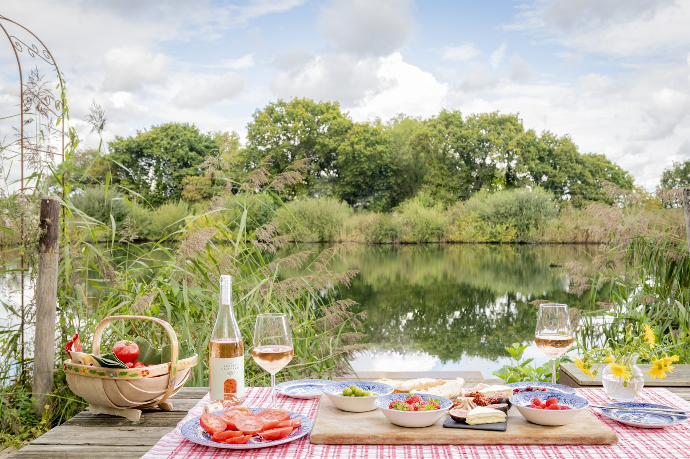

The Wealden Wine Trail
The Secret Vineyard
Estate-verified · November 2026
A vineyard between lakes and ancient woodland at Lime Cross in Herstmonceux, with monthly tours and tastings from next season, pop-up dining, a lakeside spa evening, open-air theatre, and places to stay.

The visit
The Secret Vineyard is an events-led visit: come for a monthly tour and tasting, pop-up dining or a workshop, or arrange a time to buy wine.
Tours and tastings
From next season, once a month.
Buying a bottle
Possible, but by appointment only, unless you’re there for a Pop-Up Dining night or another event.
Secret Sunset Spa
Swim, use the hot tub and sauna, then finish with a wine tasting.
Theatre and workshops
Professional open-air theatre (Romeo & Juliet, for one). The wreath-making weekend is back next Christmas, along with other workshops such as grafting and conifer identification.
Places to stay
A mirrored glass cabin on the lake with its own hot tub and jetty, a shepherd’s hut overlooking ancient woodland (both with use of the lake and sauna), and a countryside cottage. All are booked through Airbnb.
Dogs
Welcome during Pop-Up Dining.
Weddings
From 2027.
Common questions
Can you visit The Secret Vineyard?
Yes, for monthly tours and tastings from next season, events like Pop-Up Dining, or by appointment.
Can you stay at The Secret Vineyard?
Yes, in a glass cabin on the lake, a shepherd’s hut or a countryside cottage, all booked through Airbnb.
Are dogs allowed at The Secret Vineyard?
Yes, during Pop-Up Dining.
At a glance
- Where
- Lime Cross, Herstmonceux
- Tours and tastings
- Monthly from 2027
- Buying wine
- By appointment or at events
- Food
- Pop-Up Dining
- Stay
- Lake cabin, shepherd’s hut, cottage
- Dogs
- At Pop-Up Dining
- Weddings
- From 2027
Also on the Wealden Wine Trail
- Rathfinny Wine Estate Alfriston / Seaford
- Bluebell Vineyard Estate Furners Green / Uckfield
- Beacon Down Vineyard Heathfield
- Coes Farm Rotherfield
- Mousehall Distillery & Vineyard Wadhurst / Crowborough